Практичний досвід · журнал «ДентАрт» 2024 №3
Мінімально інвазивне лікування хіміко-механічного стирання зубів
MINIMALLY INVASIVE TREATMENT OF CHEMICAL AND MECHANICAL ABRASION OF TEETH
Клінічний приклад демонструє успіх прямих композитних реставрацій у пацієнтів з обмеженою хіміко-механічною стертістю зубів. Ключовою перевагою процедури є її оборотність і ремонтопридатність. Однак потрібно пам'ятати, що простота процедури не повинна бути синонімом спрощення або виключення якогось етапу планового лікування. Успіх методу ґрунтується головним чином на детальному зборі анамнезу та ретельному аналізі повної фотографічної і медичної документації.
The present report demonstrates the success of direct composite restorations in patients with restricted chemo-mechanical tooth wear. A key advantage of the procedure is its reversibility and repairability. However, we need to remember that the simplicity of the procedure must not be synonymous with the simplification or elimination of a stage of the planned treatment. The success of the method relies chiefly on taking a detailed history and a careful analysis of a complete photographic and medical documentation.
Такий стан речей може бути спричинений механічним агресивним фактором, таким як стискання або скрегіт зубами вдень або вночі, у періоди стресу або концентрації; абразивним фактором (спричиненим патологічними звичками, наприклад, кусанням предметів або твердих продуктів харчування), а також хімічним фактором.
Газовані напої, енергетичні напої, кислотні спортивні напої, фруктові соки, лимонний сік – це лише деякі з інгредієнтів, які можуть легко і часто знижувати рН у ротовій порожнині. Джерелом низького рівня рН можуть бути також ендогенні фактори, наприклад, булімія або стравохідний рефлюкс, а також порушення захисних властивостей слини, спричинені захворюваннями слинних залоз (наприклад, синдром Шегрена). У кислому середовищі іони водню або хелатні аніони розчиняють кристали емалі, порушуючи їх цілісність.1
Визначити, який із цих факторів діє в ротовій порожнині кожного пацієнта, може бути складно, оскільки у багатьох випадках ми маємо справу з двома співіснуючими механізмами, інтенсивність яких змінюється з плином часу.1 Розмова з пацієнтом, усвідомлення ним проблеми та обговорення його звичок є основою для початку лікування. Пацієнт повинен знати, що обмеження споживання газованих напоїв, виключення шкідливих продуктів з раціону або запровадження нових звичок споживання їжі, таких як полоскання водою рота після вживання особливо кислої їжі, необхідні для успіху лікування.4 Консультація із фахівцем-дієтологом або навіть гастроентерологічне обстеження – це кроки, які варто зробити заради здоров'я пацієнта.
Протоколи лікування стирання зубів досі залишаються предметом широких дискусій серед фахівців: коли оптимально починати лікування і що краще: керамічна чи композитна реставрація? Препарування чи адитивні методики? Ці сумніви посилюються, коли до нас у клініку звертається молодий, 20-річний пацієнт, і наше рішення може серйозно вплинути на стан його зубів на найближчі кілька десятиліть. Відмова від лікування може мати такі ж серйозні наслідки в майбутньому, як і агресивне препарування зубів з метою підготовки місця для керамічних реставрацій.
Мінімально інвазивний, адитивний протокол у поєднанні зі збільшенням вертикального розміру оклюзії видається найбільш раціональним рішенням у таких ситуаціях. Це дозволяє лікареві отримати достатній простір для відновлення анатомічної форми та функції зубів без додаткового втручання в їх структуру. Завдяки цим протоколам ми можемо відновлювати висоту прикусу, перекриття зубів, забезпечуючи передню та бічні позиції оклюзії. Використання композитів, технологічний рівень яких був відпрацьований протягом останнього десятиліття, дозволяє досягти оптимальної функції та естетики. Уникнення препарування зуба, яке в класичних протоколах вимагає редукції структур зуба на 40–70 %, запобігає потребі ендодонтичного лікування у майбутньому.
Планування лікування за допомогою цифрових технологій дозволяє створити модель, презентація якої пацієнтові стане чудовим мотиваційним інструментом, водночас надаючи лікареві повний контроль безпосередньо над реставрацією.
Метою аналізу цього клінічного випадку є демонстрація повного відновлення анатомічної форми та функції у молодого пацієнта зі стертістю зубів шляхом застосування прямих композитних реставрацій, спланованих за допомогою цифрових технологій.
Клінічний випадок
Здоровий 26-річний чоловік звернувся у приватну стоматологічну клініку «Стоматологія Заребських» у Варшаві з проханням вилікувати всі зуби, а також покращити естетичний вигляд передніх зубів перед весіллям.
Під час огляду ротової порожнини було виявлено кілька великих каріозних уражень бічних зубів, які поширювалися на пульпу, при цьому рентгенівські знімки не виявили жодних змін у періапікальних ділянках. Горбики молярів та премолярів, а також ріжучі краї передніх зубів були зношені, локально видно, що на дентині утворилися борозенки.
Стан скронево-нижньощелепних суглобів оцінювали за допомогою скринінгового опитувальника «Діагностичні критерії скронево-нижньощелепних розладів»,5 що дозволило виключити наявність дисфункції зубощелепної системи. Пацієнт не скаржився на дискомфорт при русі нижньої щелепи вперед або в боки, огляд підтвердив відсутність клацань та хрускоту.
Тестування за TWES 2.0 (Система оцінки стирання зубів)6 було проведене для оцінки рівня стирання зубів, ми виявили ураження емалі та оголення дентину нижче 50 % у нижніх бічних секстантах та верхньому передньому секстанті з піднебінного боку, що згодом було класифіковано як «помірне генералізоване стирання зубів, в основному механічне та частково хімічне».
Під час детального збору анамнезу пацієнт, загалом здоровий, розповів про нічний бруксизм та стискання зубів при напруженій концентрації уваги або під час інтенсивних тренувань протягом дня, визнав, що періодично вживає газовані напої, енергетичні напої та рідкі добавки для спортсменів.
Клінічний статус пацієнта до лікування
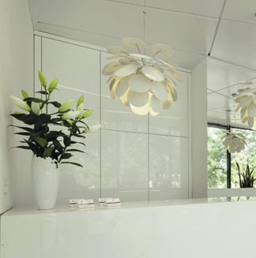
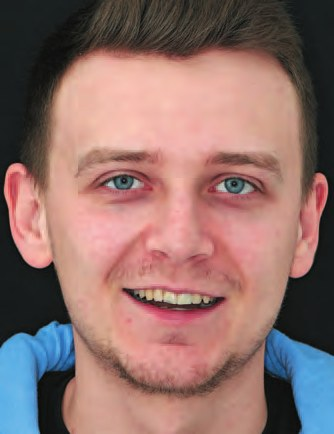
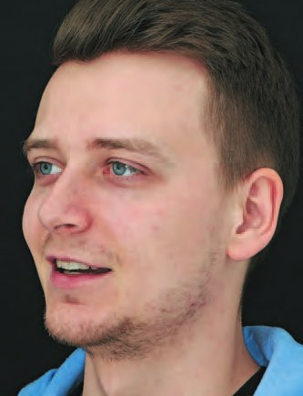
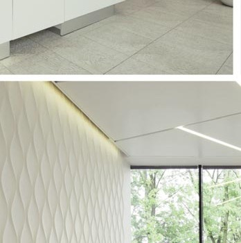
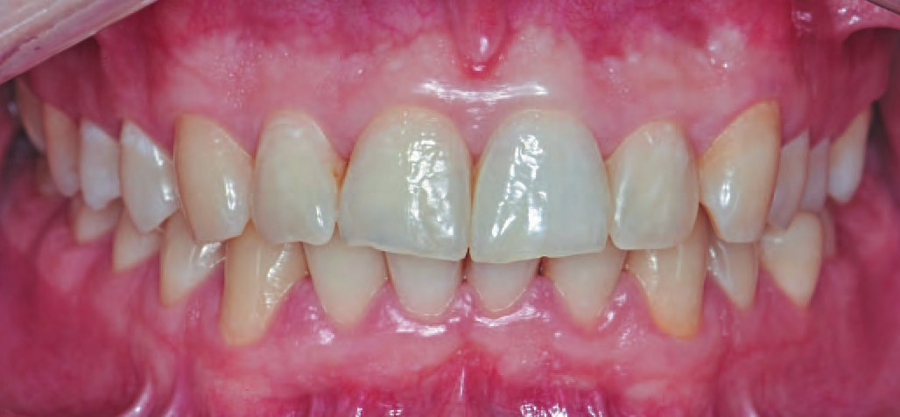
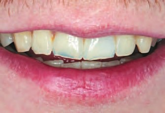
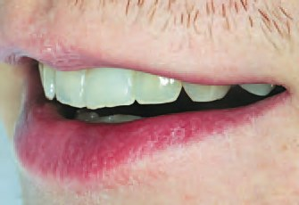
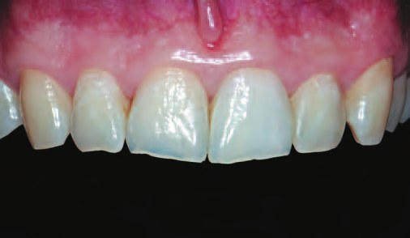
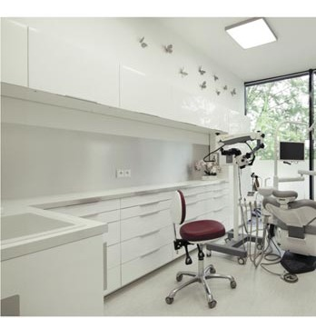
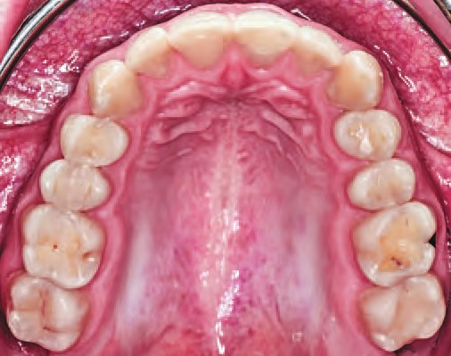
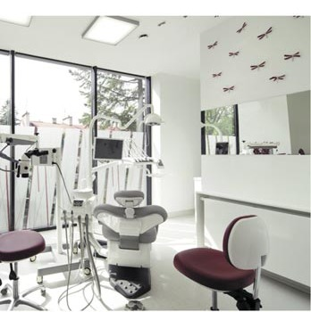
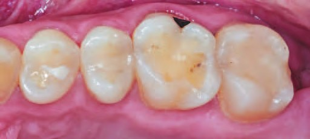
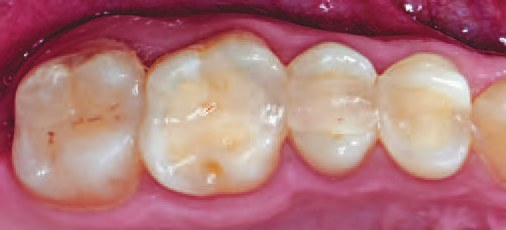
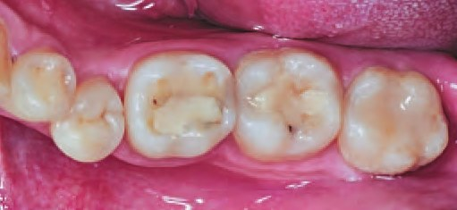
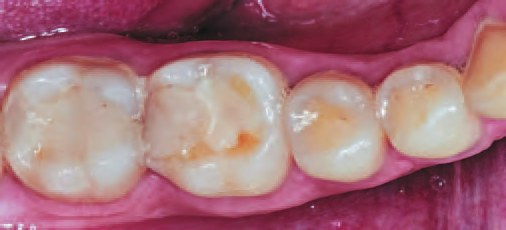
Фотодокументація дозволила провести детальний естетичний аналіз і скласти план лікування. Аналізуючи естетику обличчя, ми виявили асиметрію комісуральної лінії, яка не була паралельна двозіничній лінії. Інтраорально середня лінія була зміщена ліворуч, а лінія прикусу асиметрична, спостерігалися диспропорції висоти іклів, різниця в довгій осі центральних різців, скупченість у нижній дузі, спотворення співвідношення верхніх фронтальних зубів в результаті зносу ріжучих країв, які також були профарбовані і нерівні.
Планування і підготовка до лікування
План лікування включав санацію ротової порожнини, тобто усунення каріозних уражень, відновлення анатомічної форми зруйнованих зубів та ортодонтичне лікування з метою досягнення оптимального вертикального і горизонтального розмірів прикусу з правильним функціональним співвідношенням, після чого ішла фаза підтримуючого лікування з регулярними оглядами, професійними чистками, зменшенням шкідливих харчових звичок та, можливо, заміною дефектних пломб.
Від ортодонтичного лікування на цьому етапі відмовилися через те, що лікування потрібно було завершити в короткий піврічний термін, щоб встигнути до весілля пацієнта… Проте було заплановано провести ортодонтичне лікування в майбутньому, коли буде можливо.
Перший етап включав фазу оздоровлення. Метою мотиваційної бесіди з пацієнтом про відмову від уживання газованих напоїв була стабілізація процесу ерозії. Було проведене професійне чищення, пацієнт отримав детальні інструкції щодо щоденної гігієни ротової порожнини.
Каріозні ураження були усунуті, і зуби запломбовані наногібридним композитом Inspiro (Edelweiss DR) за допомогою пошарової техніки з використанням шарів дентину та емалі у звичній для пацієнта позиції максимальної інтеркуспідації.
Відбудова зубів верхнього правого секстанта
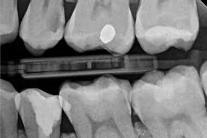
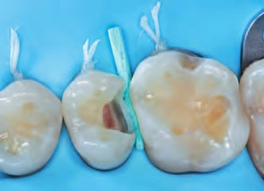
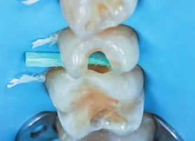
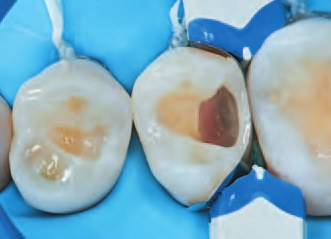
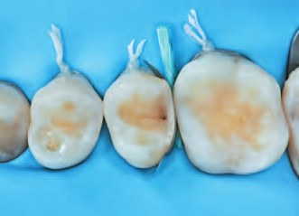
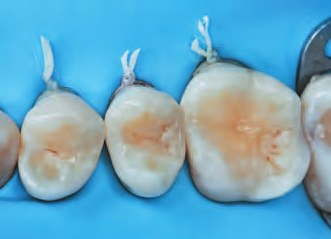
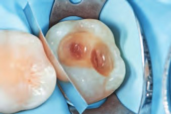
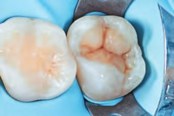
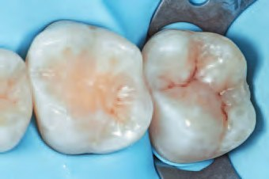
Відбудова зубів нижнього правого секстанта
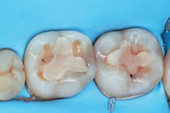
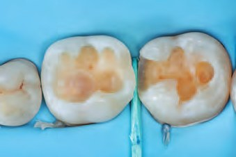
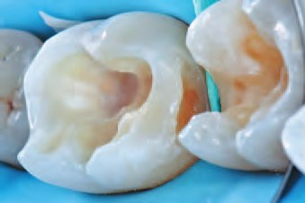
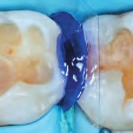
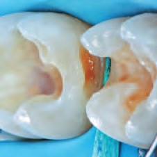
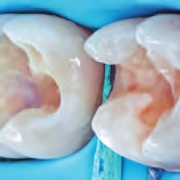
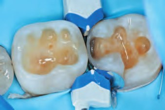
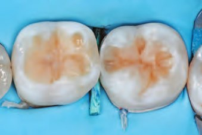
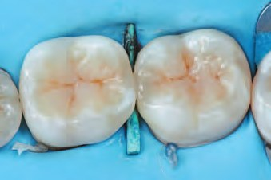
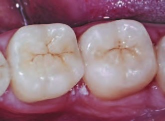
Інфільтрація ICON вестибулярної поверхні верхніх лівих молярів
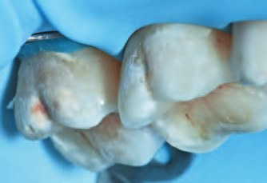
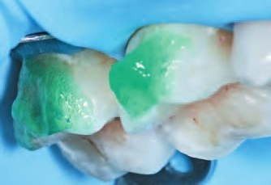
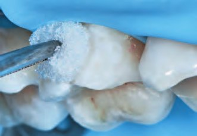
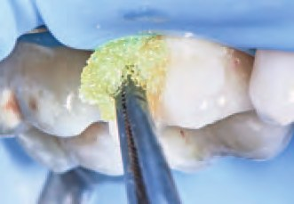
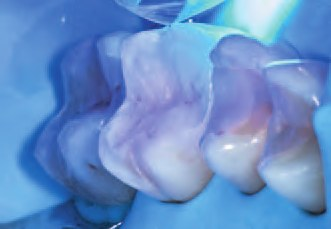
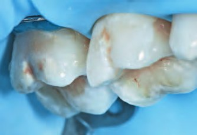
До первинних каріозних уражень на крайових гребенях формували доступ з боку сусідніх препарованих зубів з метою максимального збереження емалі. Для відновлення контактних пунктів використовували секційні матриці М200 та кільця Composi-Tight 3D (Garrison).
З метою призупинення прогресування карієсу без необхідності препарування декальцинована емаль на щічних поверхнях зубів 26 і 27 була оброблена системою ICON (DMG). Протокол передбачав обробку уражень 15 % розчином соляної кислоти протягом 2 хвилин для відкриття пор ураженої емалі і підвищення проникнення герметика, далі після промивання поверхню висушували 99 % розчином етанолу протягом 30 секунд, після чого наносили два шари інфільтруючої смоли, перший шар якої втирали в поверхню протягом 3 хвилин і другий шар – 1 хвилину. Після полімеризації кожного шару провели остаточну світлову полімеризацію з використанням гелю для блокування утворення на поверхні композиту шару, інгібованого киснем.
Після цього зубні дуги пацієнта відсканували за допомогою інтраорального 3D-сканера (Shinning 3D). Перед фіксацією положення нижньої щелепи жувальні м'язи були депрограмовані за допомогою ватних валиків товщиною 8 мм, які пацієнт мав прикусити і утримувати протягом приблизно 5 хвилин. Потім, використовуючи невелику кількість полімерної смоли швидкого затвердіння Patern-Resin (GC), ми зареєстрували точне співвідношення між верхньою і нижньою зубними дугами у фронтальній ділянці та на обох бічних ділянках. Отримані шаблони використовували для фіксації положення нижньої щелепи під час сканування для отримання даних про міжщелепні співвідношення. Скани зубних рядів пацієнта були відправлені у вигляді STL-файлів (Shinning 3D) разом із фотодокументацією в лабораторію для проєктування анатомічної форми з урахуванням правильної функції в новому вертикальному співвідношенні.
Цифровий вокс-ап верхніх передніх і нижніх бічних зубів для мінімально інвазивної реставрації
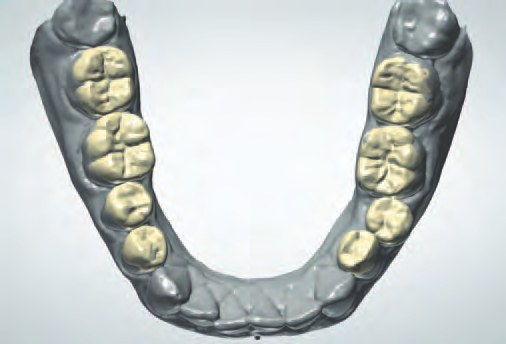
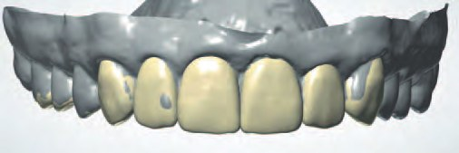
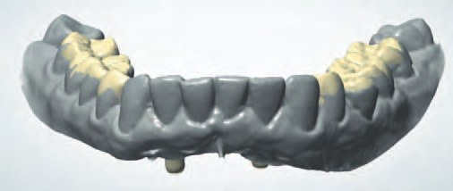
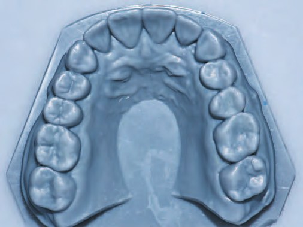
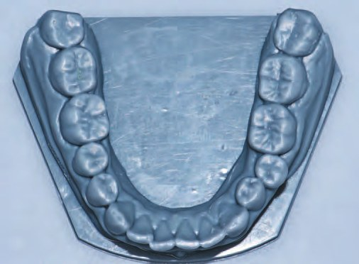
Отриманий дизайн у вигляді роздрукованої воскової моделі був перенесений на зуби пацієнта за допомогою силіконових ключів з використанням відбиткової маси LuxaTemp (DMG). Фотодокументація та фонетичні тести дозволили оцінити естетику і функцію запланованих реставрацій.
Етап реконструкції
Після схвалення пацієнтом почали відновлення вертикального розміру оклюзії. Для кращої стабілізації оклюзії роботу розпочали з бічних ділянок.7 Реставрації були завершені за один візит, спочатку ліворуч, а потім праворуч. Щоб точно відновити висоту горбиків згідно з цифровим проєктом, була застосована техніка часткового молдинга.3 Цей силіконовий індекс на увесь секстант, виготовлений за роздрукованою моделлю, розрізали вздовж центральної фісури, отримавши язичний і щічний молдинги, а потім зробили додаткові точніші розрізи, щоб можна було визначити не тільки висоту горбиків, але й нахил кожного горбика, щоб точно змоделювати їхні скати до центральної фісури.
Стабільна позиція індексу забезпечується поверхнею невідновлених зубів (у цьому випадку третіх молярів та іклів) і невідновленими проксимальними ділянками. Після встановлення рабердаму і перевірки точності позиції індексу зуби та реставраційні поверхні були оброблені абразивним піскоструминним апаратом з діоксидом алюмінію 27 мкм, CoJet Sand (3M) з метою видалення апризматичної емалі та оголення призм, що забезпечило б кращу адгезію.8 Адгезивний протокол включав селективне протравлювання дентину та емалі протягом 15 с та 30 с відповідно 37 % ортофосфорною кислотою, Ultra-Etch (Ultradent), а також нанесення праймера та бонду із 3-етапної системи протравлювання та змивання у 2-х флаконах Optibond FL (Kerr), який затверджувався світлом протягом 10 с за допомогою полімеризаційної лампи Valo (Ultradent).
Надалі на язичний молдинг у зоні горбиків молярів і премолярів наносили невелику кількість емалевої композитної смоли Inspiro Skin White (Edelweiss DR), об'єм смоли розраховували, виходячи з проєкту. Якщо при встановленні силіконового індексу на зуби притискати його вниз до оклюзійної поверхні, надлишки матеріалу витісняються на жувальну поверхню. Після ретельного видалення надлишків композитний матеріал піддавали світловій полімеризації протягом 20 с з боку, протилежного до індексу, і повторно по 20 с після зняття індексу.
Проксимальні стінки, які потребували відновлення висоти, були відновлені емалевим відтінком композиту і секційною матрицею MO200 та кільцем Composi-Tight 3D blue (Garrison). У зубі 45 було застосовано золоте кільце Composi-Tight Gold Ring, оскільки воно дозволило краще адаптувати матрицю до щічної поверхні зуба, що зміщений вестибулярно. Відсутня оклюзійна поверхня була відновлена у вільній техніці на основі попередньо змодельованої анатомічної форми. Потім поверхню композиту очищали праймером SE Bond 2 (Kuraray) і тонким інструментом Composculp (HuFriedy) наносили текучий композит Fissure Effect Shades Inspiro (Edelweiss DR) для характеризації фісур; надлишок текучого композиту видаляли мікроаплікатором. Після 20-секундної полімеризації наносили тонкий шар SE Bond2 (Kuraray) і полімеризували ще 10 секунд крізь гліцериновий гель, блокуючи утворення інгібованого шару. Після зняття рабердаму перевірили точність оклюзійних контактів, а також кількість місця для реставрацій у фронтальній ділянці верхньої зубної дуги.
На наступний візит було заплановано реставрацію верхніх передніх зубів: відновлення піднебінної та щічної поверхонь, а також подовження ріжучих країв. Після встановлення рабердаму зроблена медіальна корекція старої пломби в зубі 11, завдяки чому була вирівняна серединна лінія, а обидва центральні різці набули симетричної ширини. Підготовка решти поверхонь зубів обмежилася піскоструминною обробкою з метою видалення апризматичної емалі та згладжування абразивними дисками OptiDisc medium coarse (Kerr) на ріжучих краях тонких фрагментів емалі, що потріскалися, оскільки ці фрагменти могли легко відірватися під час полімеризації світлом, що ускладнило б досягнення ідеальної оптичної інтеграції. Ріжучі краї центральних і латеральних різців були відновлені за допомогою силіконового індексу з позначенням лінії дефекту, на який був нанесений тонкий шар композитної емалі Skin White Inspiro (Edelweiss DR). Потім у відповідності з протоколом Natural Layering Concept8 на ріжучий край накладали шар дентину відтінком Bi3 Inspiro (Edelweiss DR), моделюючи мамелони. Поліхромний ефект був досягнутий за допомогою нанесення невеликої кількості Azure Effect Shades Inspiro (Edelweiss DR) біля ріжучого краю, імітуючи блакитний ореол, а також на мамелони точково був нанесений тонкий шар молочного матеріалу Ice Inspiro (Edelweiss DR), підкреслюючи їх більшу непрозорість. Проксимальним поверхням надавали форму за допомогою целулоїдних стрічок Blue View VariStrip (Garrison) та секційних матриць M200 (Garrison). Реставрацію завершували нанесенням на щічну поверхню шару композитної емалі; кількість матеріалу розраховували на основі проєкту.
Для досягнення точності при відновленні піднебінної поверхні іклів та їх горбиків підготовлені прозорі силіконові індекси з маси Memosil (GC),9 які були прецизійно вирізані на контактних поверхнях, що дозволило легко видалити надлишки матеріалу з цих ділянок. Щічна поверхня індексу виконувала функцію стабілізації. Потім емалевий відтінок композиту нагрівали до 56° С в апараті Ena Heat (Micerium), наносили на поверхню індексу і розміщували на зубі, стабілізуючи його по щічній поверхні і видаляючи надлишки матеріалу на контактних поверхнях перед полімеризацією. 60 с світлової полімеризації крізь прозорий індекс були доповнені додатковими 40 с полімеризації після зняття індексу.
Згодом краї реставрації були скориговані та сформовані в основну первинну анатомію за допомогою дисків OptiDisc (Kerr) з різним ступенем абразивності, від середньо-грубої до дрібної. Потім їх поверхня була очищена праймером SE Bond 2 (Kuraray) і запечатані мікропори.
Відновлення анатомічної форми нижніх бічних зубів
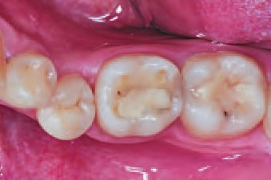
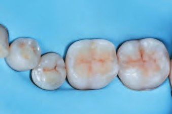
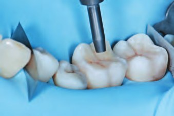
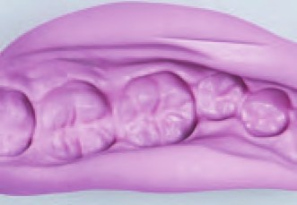
Відновлення анатомічної форми верхніх різців
Відновлення анатомічної форми верхніх передніх різців
Відновлення анатомічної форми верхніх іклів
На завершальному етапі за допомогою полум'яподібних фінішних борів формували вертикальні та горизонтальні мікроструктури, які спочатку згладжували полірувальними гумовими чашечками Polisher Mini Point Small (Kerr) для підготовки до світлового затвердіння, а потім знову згладжували за допомогою HiLuster (Kerr) та нейлонових щіток.
Прямі композитні конструкції були доповнені одиночною накладкою з дисилікату літію IPS e.max Press (Ivoclar) у премолярі 25 через його несприятливий біомеханічний статус: глибина ураження понад 5 мм, відсутність контактних стінок, тонкий шар надпульпарного дентину та ураження під'ясенного дентину. Крім того, розташування зуба в естетичній зоні та необхідність збереження щічної стінки зумовили проведення мінімально інвазивного препарування. Зрештою, препарування обмежилося видаленням старого матеріалу, а внутрішня форма була покращена за допомогою процедури підняття пришийкового краю (CMR – cervical margin relocation) та оптимізації композитом дизайну порожнини (CDO – cavity design optimization).10
Відновлення зуба 25 керамічною перекриваючою накладкою
Клінічний статус пацієнта після лікування
Фінальна фотодокументація була виконана через місяць. Пацієнта проінформовано про необхідність дотримання правильної гігієни ротової порожнини та уникнення вживання кислих газованих напоїв. Для контролю механічного стирання зубів була виготовлена нічна капа товщиною 1,5 мм.
Обговорення
Мінімально інвазивний протокол лікування хіміко-механічного стирання зубів – оптимальне рішення для молодих пацієнтів. Відновлення анатомічної форми зуба без потреби препарування рятує зубні тканини від подальшої втрати, водночас даючи час на усунення старих звичок, які спричинили стирання зубів.
Збільшення вертикального розміру прикусу (VDO – vertical dimension of occlusion), донедавна суперечлива процедура в реконструктивній стоматології, сьогодні вважається безпечною за умови, що їй передують відповідні етапи діагностики та планування.11–13 Новий вертикальний розмір є не жорсткою, а динамічною величиною, яка планується в межах фізіологічної толерантності пацієнта.14 Збільшення VDO до 5 мм вважається безпечним діапазоном, у межах якого всі симптоми минають спонтанно, а також зміна легко сприймається пацієнтом.15
У даному випадку перед реєстрацією міжщелепних співвідношень жувальні м'язи були депрограмовані, щоб усунути їх вплив на траєкторію відведення нижньої щелепи.16 Нове значення VDO оцінювалося з урахуванням естетичних (експозиція зубів, лінія усмішки) і функціональних аспектів (вертикальний і сагітальний параметри прикусу, траєкторія кривої Spee), передньої і бічних позицій оклюзії, а також біомеханічних вимог до матеріалу в рамках мінімально інвазивного протоколу (мінімальна товщина).17 Діапазон цієї модифікації становив 2–1,5 мм і охоплював збільшення тільки в одній дузі. Враховуючи поглиблення кривої Spee, була проведена реконструкція дистальної ділянки нижньої зубної дуги з відновленням контакту у фронтальній ділянці на піднебінних поверхнях верхньої зубної дуги.
Майстер-проєкт, заснований на повному наборі фотографій пацієнта і внутрішньоротових знімків, є обов'язковим етапом перед тим, як братися до фінальної реставрації. Це важливий крок у перевірці запланованої естетики та функції, який також дозволяє візуалізувати наші дії для пацієнта.
Вибір відповідного матеріалу для реконструкції стертих зубів все ще залишається темою жвавих дискусій. Вибір між керамікою та композитом – це не тільки питання фінансів пацієнта, але, можливо, передусім питання незворотного біологічного компромісу. З іншого боку, потрібно враховувати біомеханічний статус стертих зубів і ендодонтично лікованих, особливо в зоні дії сил на розтягування і руйнуючих сил.
Нова тенденція, що розвивається останніми роками в реконструктивній стоматології, відходить від так званої монотерапії, тобто застосування одного виду матеріалу для повної реабілітації ротової порожнини. Натомість рішення про використання кераміки чи композиту базується на біомеханічному статусі зубів, що лікуються.
Кераміка, зокрема дисилікат літію, зміцнить структуру зуба за умови, що її товщина становитиме 1,5–2 мм; у тонших шарах краще працюватиме композитний матеріал, пластичність якого підвищує тріщиностійкість.18
Молодий вік пацієнта та відсутність потреби у препаруванні є ключовими критеріями вибору прямих композитних реконструкцій для лікування. Ця проста та економічна процедура забезпечує оптимальну функцію в поєднанні з оптимальною естетикою. Проєкт, перенесений згодом за допомогою часткових індексів, дозволив точно відновити новий розмір, який послужив основою для естетичного моделювання решти анатомічних структур, скоротивши етап корекції надлишкового матеріалу до мінімуму.
Протокол Natural Layering Concept (NLC), який передбачає використання тільки двох типів відтінків композиту (дентин і емаль), додатково доповнених текучими композитами для спеціальних ефектів, дозволяє досягти поліхроматичної глибини в естетичній сфері та оптичної інтеграції з тканинами зуба.19,20
Однак потрібно не забувати інформувати пацієнта про те, що застосування композиту з часом може спричинити ризик утворення відколів або незначних крайових відшарувань. Для запобігання локальним пошкодженням, що виникають внаслідок скреготіння або стискання зубів, рекомендується користуватися зубною капою в нічний час.
Перевагою композитного матеріалу є його легка ремонтопридатність, за декілька хвилин ми здатні виправити будь-яку недосконалість. Протягом року в середньому лише 3 % випадків потребують невеликої корекції.12
Висновки
Цей клінічний приклад демонструє успіх прямих композитних реставрацій у пацієнтів з обмеженою хіміко-механічною стертістю зубів. Розвиток адгезивних методик і композитних матеріалів пропонує практикуючим лікарям нові можливості лікування пацієнтів зі стиранням зубів. Це важлива альтернатива, яка дозволяє усунути біологічний компроміс. Ключовою перевагою процедури є її оборотність і ремонтопридатність. Однак потрібно пам'ятати, що простота процедури не повинна бути синонімом спрощення або виключення якогось етапу планового лікування. Успіх методу ґрунтується головним чином на детальному зборі анамнезу та ретельному аналізі повної фотографічної і медичної документації. Лише за умови виконання цих кроків ми можемо все передбачити та не допустити потенційних невдач.
Література
- Hemmings Kenneth & Truman Angharad & Shah Sachin & Chauhan Ravi. (2018). Tooth wear guidelines for the BSRD part 1: Aetiology, diagnosis and prevention. Dental Update. 45. 483–495. 10.12968/denu.2018.45.6.483.
- Lussi A., Ganss C. (Eds.). Erosive Tooth Wear from Diagnosis to Therapy; Karger Medical and Scientific Publishers: Basel, Switzerland, 2014.
- Dietschi D., Saratti C. M., Erpen S. Tooth Wear: Interceptive treatment approach with minimally invasive protocols. 2023; ISBN 9783868676693; Quintessenz Verlag.
- Vilaboa D. R., Vilaboa B. R., Reuss J. M., Reuss D. Tooth Wear: The Quintessential Challenge; 9781786981202, 2023, Quintessence Publishing Company Limited.
- Schiffman E., Ohrbach R., Truelove E., Look J., Anderson G., Goulet J.-P., List T., Svensson P., Gonzalez Y., Lobbezoo F., et al. Diagnostic Criteria for Temporomandibular Disorders (DC/TMD) for Clinical and Research Applications: Recommendations of the International RDC/TMD Consortium Network* and Orofacial Pain Special Interest Group. J. Oral Facial Pain Headache 2014, 28, 6–27.
- Wetselaar P., Wetselaar-Glas M. J., Katzer L. D., Ahlers M. O., Wetselaar-Glas M. M. Diagnosing tooth wear, a new taxonomy based on the revised version of the Tooth Wear Evaluation System (TWES 2.0). J. Oral Rehabil. 2020, 47, 703–712.
- Dietschi D., Saratti C. M. Interceptive treatment of tooth wear: a revised protocol for the full molding technique. Int J Esthet Dent. 2020;15(3):264-286. PMID: 32760923.
- Patcas R., Zinelis S., Eliades G., Eliades T. Surface and interfacial analysis of sandblasted and acid-etched enamel for bonding orthodontic adhesives. AJO-DO 2015, 147, 64–75.
- Ammannato R., Ferraris F., Marchesi G. The «index technique» in worn dentition: a new and conservative approach. Int J Esthet Dent. 2015 Spring;10(1):68-99. PMID: 25625128.
- Dietschi D., Spreafico R. Evidence-based concepts and procedures for bonded inlays and onlays. Part I. Historical perspectives and clinical rationale for a biosubstitutive approach. Int J Esthet Dent. 2015 Summer;10(2):210–27. PMID: 25874270.
- Goldstein G., Goodacre C., MacGregor K. Occlusal Vertical Dimension: Best Evidence Consensus Statement. J. Prosthodont. 2021, 30, 12–19.
- Loomans B., Opdam N. A guide to managing tooth wear: The Radboud philosophy. Br. Dent. J. 2018, 224, 348–356.
- Negrão R., Cardoso J. A., de Oliveira N. B., Almeida P. J., Taveira T., Blashkiv O. Conservative restoration of the worn dentition - the anatomically driven direct approach (ADA). Int J Esthet Dent. 2018;13(1):16–48. PMID: 29379902.
- Saratti C. M., Rocca G. T., Vaucher P., Awai L., Papini A., Zuber S., Di Bella E., Dietschi D., Krejci I. Functional assessment of the stomatognathic system. Part 1: The role of static elements of analysis. Quintessence Int. 2021.
- Abduo J. Safety of increasing vertical dimension of occlusion: A systematic review. Quintessence Int. 2012, 43, 369–380.
- Juliá-Sánchez S., Álvarez-Herms J., Cirer-Sastre R., Corbi F., Burtscher M. The influence of dental occlusion on dynamic balance and muscular tone. Front. Physiol. 2020, 10, 1626.
- Calamita M., Coachman C., Sesma N., Kois J. Occlusal vertical dimension. IJED 2019, 14, 166–182.
- Vajani D., Tejani T. H., Milosevic A. Direct composite resin for the management of tooth wear: A systematic review. Clin. Cosmet. Investig. Dent. 2020.
- Dietschi D. Optimising aesthetics and facilitating clinical application of free-hand bonding using the 'natural layering concept'. Br Dent J. 2008 Feb 23;204(4):181–5. doi: 10.1038/bdj.2008.100. PMID: 18297019.
- Dietschi N. F., Jr. Shading concepts and layering techniques to master direct anterior composite restorations: An update. Br. Dent. J. 2016, 221, 765–771.